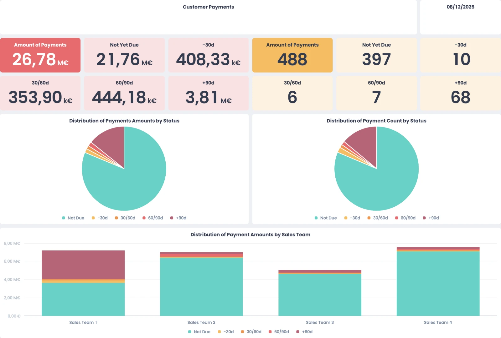
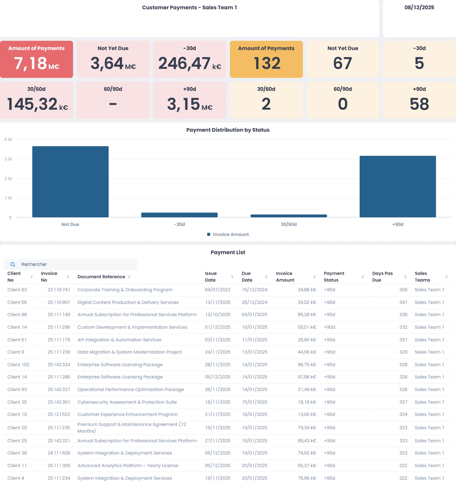

OSLO · IT & SaaS Solutions
OSLO · IT & SaaS Solutions
Aged receivables reporting
Automated aged receivables reporting by business unit and by sales representative to support cash collection and cash flow monitoring.
3 business units covered
- Role
- Data Analyst Intern
- When
- Sep – Dec 2025
- Where
- Villeneuve d'Ascq, France
- Business unit
- PDV · ~€4M revenue a year
Context
The PDV business unit of OSLO generates about €4M in revenue a year, serves several hundred clients and issues several thousand invoices a year. The accounting tool provided by the finance department only showed the total amount of overdue payments and a raw list of unpaid invoices.
The problem
- With this many clients and invoices, it was hard to see quickly which disputes to handle first and what action to take.
- Unpaid invoices built up over time, with no monitoring tool and no clear owner in the sales teams.
What I built
An automated aged receivables reporting system, directly connected to the payment data extracted from the ERP.
- ERPPayment data extracted automatically
- Data modelPayments structured by status and sales representative
- MyReport dashboardsDesigned for day-to-day use
Each payment gets a status by days overdue: Not due< 30 days30–60 days60–90 days90+ days
Two dashboards
1. Global receivables dashboard
An overview of the business unit's collections, for management.
- Total payment amounts by payment status
- Number of payments by status
- Bar chart of receivable amounts by sales representative and payment status

2. One dashboard per sales representative
Each sales representative sees only their own portfolio, for targeted follow-up and dispute resolution.
- Total payment amounts and number of payments by status
- Chart of receivables by status
- Detailed list of outstanding payments with customer information, sorted by days overdue

Impact
Receivables are managed proactively, and the sales teams are accountable for resolving their disputes, contributing to cash control for the business unit.